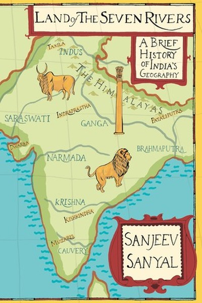

Library › Power & Strategy
Land of the Seven Rivers — Summary & Key Lessons

Indian history rewritten through its great rivers.
📖 OPEN THE FULL INTERACTIVE BREAKDOWN →🌐 Read it in Hindi, Hinglish, Gujarati, Tamil & 22 more languages — free, with audio.
💡 The Big Idea
Sanjeev Sanyal's sweeping rewrite of Indian history argues that the subcontinent's story is best understood through its geography — the seven great rivers (Sindhu, Saraswati, Ganga, Yamuna, Brahmaputra, Narmada, Godavari/Kaveri) that shaped where people settled, traded, fought and thought. He debunks the 'Aryan invasion' myth, celebrates the Harappan civilization as one of the world's most advanced, and traces how India's riverine heartland became the wealthiest region on earth — until colonial extraction reversed it. The book's lesson: geography is destiny — the land's natural advantages, trade routes and ecological logic explain more about India's past (and its future potential) than any single ruler or empire.
🧠 The 6 Key Lessons
Lesson 1: The River Is the Original Highway
Part 1: The Geography
Sanyal's foundational point: before roads, railways and airports, rivers were India's highways — the Indus and its tributaries moved goods, armies and ideas across the subcontinent, and the cities that sat on them (Harappa, Mohenjo-daro, later Varanasi, Patna) became the trading hubs of their age. The river basin was the original economic zone: agriculture, transport, communication and defence all followed the water. The strategic lesson for any era: infrastructure follows geography. The people who understand their terrain — its routes, its bottlenecks, its resources — can build wealth and power; those who ignore it build on sand.
📖 Example: Sanyal shows how the Harappan cities were positioned precisely at the junction of trade routes — riverine and overland — making them the Dubai of their era, long before the term existed. Their wealth was geography, converted into urbanism. Read the full example →
⚡ Do this: Map your 'river' — the channel (market, platform, network, skill) through which your value flows. Invest one hour this week in strengthening your position on it.
Lesson 2: The Saraswati and the Power of Revisionist History
Part 2: The Lost River
One of Sanyal's most controversial chapters reconstructs the Saraswati — a river that once flowed through the heartland and then disappeared, probably due to tectonic shifts. His point is larger than the river itself: history is constantly being revised by new evidence (satellite imagery, archaeology, genetics), and the myths we inherit about the past are often wrong. The practical lesson: your 'facts' about the past — personal, professional, national — deserve periodic revision. The person who treats their history as fixed stops learning; the person who revisits it with new evidence finds the Saraswati beneath the sand.
📖 Example: Sanyal demonstrates how the 'Aryan invasion' narrative — long treated as settled fact — collapses under genetic and archaeological evidence, and how accepting that revision changes the entire story of Indian civilization. The willingness to revise was the… Read the full example →
⚡ Do this: Pick one 'settled fact' from your own story (about your career, your abilities, your industry). Find one piece of new evidence that challenges it — and update your narrative if warranted.
Lesson 3: The Market Was Always There: Trade Before Colonialism
Part 3: The Economy
Sanyal documents that pre-colonial India was not the 'backward economy' of colonial propaganda — it was one of the world's most sophisticated commercial civilizations, with flourishing textiles, spices, banking instruments (hundis), and merchant networks spanning the Indian Ocean. Indian cotton clothed the world; Indian bankers financed kings. The lesson: economic dynamism is not a Western invention — it re-emerges wherever security and property are reasonably protected. The modern takeaway for builders: if the environment is hostile, don't assume the market is absent — the market is always there; it's the institutions that need fixing.
📖 Example: Sanyal cites how Indian merchants operated sophisticated credit instruments and insurance centuries before European equivalents became standard — the 'primitive' economy was running advanced financial technology on trust networks. Read the full example →
⚡ Do this: Challenge one assumption that 'this market is not ready'. Find historical or current evidence of demand that others dismiss — and note one way to serve it.
Lesson 4: The Cost of Extraction: What Colonialism Actually Did
Part 4: The Decline
Sanyal's account of India's decline is blunt: it was not 'backwardness' that made India poor — it was systematic extraction. Colonial policy deindustrialized India (famously destroying its textile industry), redirected its wealth to Britain, and froze its institutions into extractive shapes. The lesson is uncomfortable but universal: wealth is created by production and trade, and destroyed by extraction — whether by a foreign empire, a corrupt elite, or a rent-seeking bureaucracy. For the modern reader: protect your production from extraction. Diversify your income sources, own your distribution, and avoid structures where your output enriches others while you remain dependent.
📖 Example: Sanyal traces how Indian cotton — spun, woven and exported for centuries — was banned from being exported as finished cloth, forcing India to ship raw cotton to Britain and buy back British cloth. The extraction was engineered at the policy level, and it… Read the full example →
⚡ Do this: Audit your work for 'extractive structures': where does your effort create value that others capture disproportionately? Identify one way to own more of your output.
Lesson 5: The Rivers of Memory: Identity Is Geography Too
Part 5: The Culture
Sanyal's cultural chapters show how rivers became the spine of Indian identity — the Ganga's bathing ghats, the ghats of Varanasi, the river names that anchor every region's self-image. His point: identity is not just genes or language — it is geography internalized. Communities that share a river share a history, a cuisine, a rhythm of life. The modern lesson: in any organization or nation, the 'shared geography' — the physical and cultural spaces people inhabit together — is a powerful bonding force. Leaders who create shared spaces and shared stories build resilience that no policy document can match.
📖 Example: Sanyal describes how the same river that fed Harappan agriculture became the sacred thread of a civilization's memory — economic necessity became cultural identity. The practical echo: the shared office, the shared ritual, the shared journey — these are the… Read the full example →
⚡ Do this: Identify the 'shared river' of your team or family — the ritual, place or story you all share. Strengthen it with one deliberate act this month.
Lesson 6: The Future Is in the Terrain: Reading India's Comeback
Part 6: The Present
Sanyal ends by arguing that India's natural advantages — its geography, its demographic energy, its entrepreneurial culture — have been obscured by a century of bad institutions, but they haven't disappeared. The same terrain that made India wealthy before will do so again, IF the policy environment lets it. The universal lesson: your natural advantages don't expire — they wait. The founder with a real edge, the region with real resources, the person with real skills — all can be suppressed by bad systems, but the advantage remains latent. The strategy is to fix the system around the advantage, and to position yourself where your terrain can do its work.
📖 Example: Sanyal points to how India's IT and services boom erupted the moment regulation loosened — the human terrain (English, math, hunger) had been there all along, waiting for an environment that would let it convert into output. Terrain + permission = prosperity. Read the full example →
⚡ Do this: Write your three natural advantages that are currently 'suppressed by environment'. List one environmental fix you can make this quarter — and one positioning move that lets your advantage show.
✅ 5-Step Action Plan
- Identify and strengthen your position on your 'river' — the channel your value flows through.
- Revise one settled belief about your own story with new evidence.
- Challenge one 'market not ready' assumption with historical evidence.
- Audit and reduce one extractive structure in your work.
- Strengthen one shared 'river' (ritual/space) of your team or family.
💬 Best Quotes from Land of the Seven Rivers
- “Geography is destiny — the land decides more than any king ever did.”
- “India was not backward before colonialism; it was deindustrialized.”
- “Your natural advantages don't expire — they wait for the right environment.”
Interactive version: mark lessons as read, listen in your language, share quote cards.